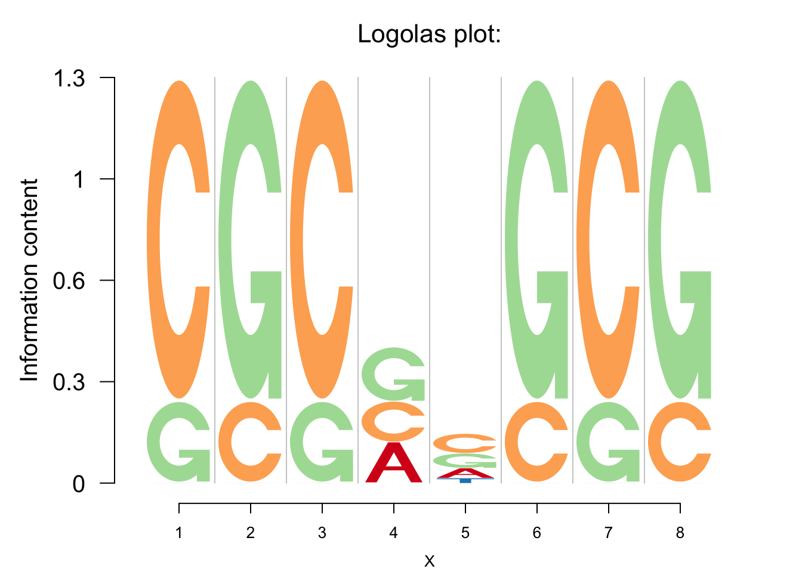
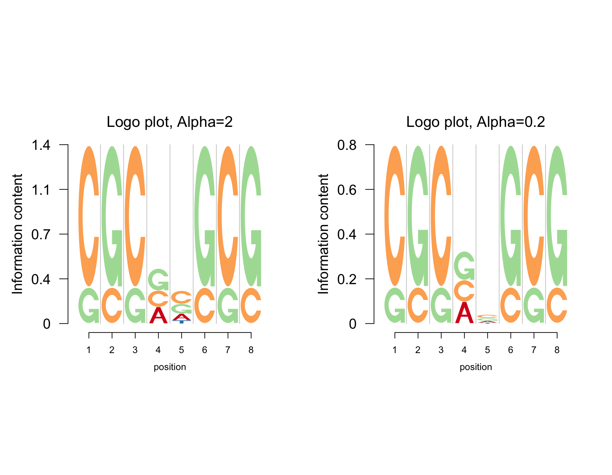

Standard Logo
Simple Illustration
One of the primary applications of logo plots is in visualizing DNA sequence motif (e.g.: seqLogo). These logo plots comorise of 4 characters (A,C,G and T) corresponding to the 4 bases. We start with an example application from seqLogo
library(grid)
library(gridBase)
mFile <- system.file("Exfiles/pwm1", package="seqLogo")
m <- read.table(mFile)
p <- seqLogo::makePWM(m)
seqLogo::seqLogo(p)We illustrate how a standard logo plot can be created in Logolas using the . logomaker() function.
library(Logolas)
color_profile <- list("type" = "per_row",
"col" = RColorBrewer::brewer.pal(dim(p@pwm)[1],name ="Spectral"))
logomaker(p@pwm,color_profile = color_profile, ic.scale = TRUE)
As evident from the above example, logomaker offers the user several options to stylize the plot.
color_profile : This option allows the user to specify the color palettes for different symbols. This is a list argument with two items - a
typevariable and acolorvariable. Thetypevariable represents the coloring scheme and can be either of three choices -per_row,per_symbolandper_columndepending on whether the user wants to fix a color for a specific row name of the PWM matrix, or for each column or for a specific character of an alphanumeric string. We shall discuss these different choices in greater detail in the next section.ic.scale : If TRUE (which is also the default), Information Content (I.C) is used to determine the stack heights in the logo plot. If FALSE, the stack heights are scaled to 1.
Information Criterion and Background Probabilities
As default, logomaker assumes that the background probability of the occurrence of each base at a position is discrete uniform. However, when a background probability is known for a specific position of the sequence, the user may use that information to relatively scale the heights.
The information content for position \(i\) is then calculated as follows
\[IC_i=\Sigma_b p_{b, i}\times \log_2p_{b, i}-(\Sigma_b p_{b,i}\times \log_2q_{b,i})\]
where \(p_{b,i}\) is the relative frequency of base \(b\) at position \(i\) and \(q_{b, i}\) is the background probability of base \(b\) and position \(i\).
The background probability can be fixed through the input bg in logomaker. bg can be a matrix, vector or NULL. When bg is a matrix, each position has a specific base probability \(q_{b,i}\), if bg is a vector, it is assumed that \(q_{b,i} = q_{b}\) for all \(i\), and if NULL, the background probability is assumed to be same for all the bases ( for example - \(q_{b,i} = 0.25\) for DNA/RNA sequence data with no specified bg).
We present examples of Logolas with different options for bg. We plot here a multi-panel Logolas plot for different choices of bg.
[A FIGURE GOES HERE]
logomaker(p@pwm,xlab = 'position',color_profile = color_profile,
frame_width = 1,
bg=c(0.32, 0.18, 0.2, 0.3),
pop_name = 'Change background prob',
control = list(viewport.margin.left = 5))
Color palettes in Logolas
Logolas also allows the user to choose different color palettes
color_profile1=list("type" = "per_row",
"col" = RColorBrewer::brewer.pal(dim(p@pwm)[1],name ="PiYG"))
logomaker(p@pwm,xlab = 'position',color_profile = color_profile1,
frame_width = 1,
pop_name = 'Change color',
control = list(viewport.margin.left = 5))using a background with equal probability for all symbols
Other entropy measures
Besides the default Shannon entropy, logomaker can also determine the Information content using Renyi entropy. For this entropy measure, the Information content at position \(i\) is \(IC_{i,\alpha}=\frac{1}{1-\alpha}\Sigma_b\log_2(q_{b,i}^\alpha-0.25^{1-\alpha})\). When \(\alpha\rightarrow1\), the limiting value of Renyi entropy is the Shannon entropy. In logomaker, alpha is a control parameter that can be tuned to get plots for different entropy measures. The figure below shows the logo plots with different values of \(\alpha\).
get_viewport_logo(1, 2)
seekViewport(paste0("plotlogo", 1))
logomaker(p@pwm,xlab = 'position',color_profile = color_profile,
frame_width = 1,
newpage = FALSE,
pop_name = 'Logo plot, Alpha=2',
control = list(viewport.margin.left = 5,alpha=2))
seekViewport(paste0("plotlogo", 2))
logomaker(p@pwm,xlab = 'position',color_profile = color_profile,
frame_width = 1,
newpage = FALSE,
pop_name = 'Logo plot, Alpha=0.2',
control = list(viewport.margin.left = 5,alpha=0.2))